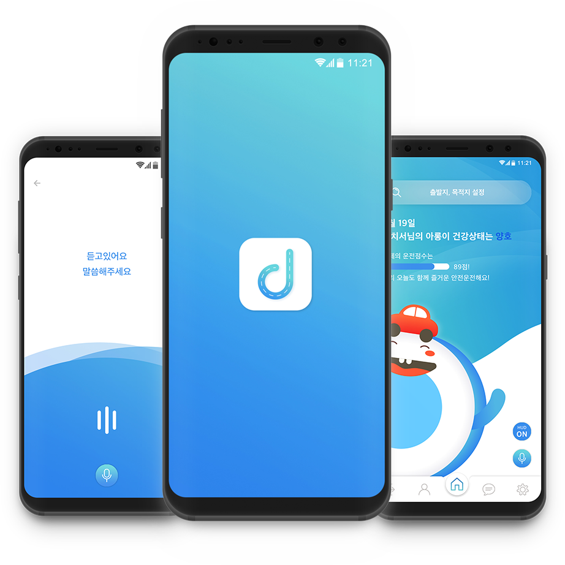

운전과 사고는 뗄 수 없는 존재!
"Dear.Car"는 기존에 없던
스트롱 시니어의 안전을 지켜줄
안전운전 비서 서비스입니다.

운전과 사고는 뗄 수 없는 존재!
"Dear.Car"는 기존에 없던
스트롱 시니어의 안전을 지켜줄
안전운전 비서 서비스입니다.
: 주체적이며 활동적인 성향을 가진 60대 이상의
노년층을 스트롱 시니어로 재 정의하여 타깃 도출.